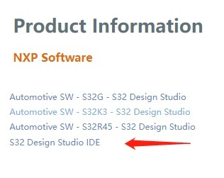
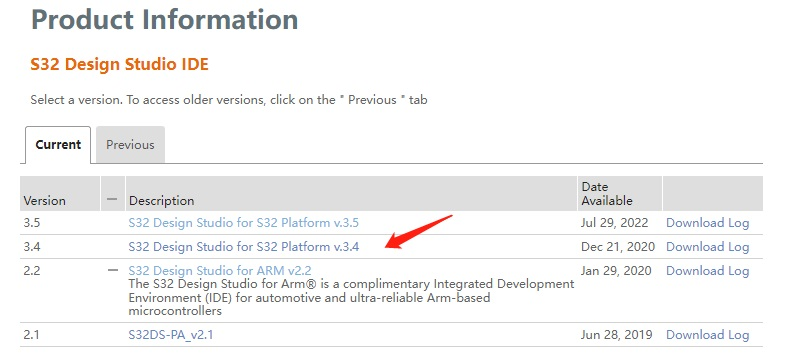
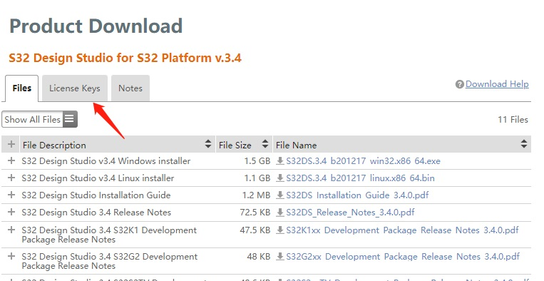

S32K1XX
S32K1 数据手册 REV14
S32K-DS.pdf
S32K1 参考手册 REV14
S32K-RM.pdf
S32K1 Part Number
S32K1xx_Orderable_Part_Number_List.xlsx
IO 引脚定义
S32K116_IO_Signal_Description_Input_Multiplexing.xlsx
S32K118_IO_Signal_Description_Input_Multiplexing.xlsx
S32K142W_IO_Signal_Description_Input_Multiplexing.xlsx
S32K142_IO_Signal_Description_Input_Multiplexing.xlsx
S32K144W_IO_Signal_Description_Input_Multiplexing.xlsx
S32K144W_M4_Reset values of registers.xlsx
S32K144_IO_Signal_Description_Input_Multiplexing.xlsx
S32K146_IO_Signal_Description_Input_Multiplexing.xlsx
S32K148_IO_Signal_Description_Input_Multiplexing.xlsx
其他文档
S32K1xx_DMA_Interrupt_mapping.xlsx
S32K1xx_Memory_Map.xlsx
S32K1xx_Power_Modes _Configuration.xlsx
S32K1xx_Trigger_Muxing.xlsx
常见问题
S32K1xx系列MCU的常见内核异常(Fault Exception)及处理详解(以S32K144为例介绍)
S32K1xx系列MCU应用指南之芯片锁死(lockup)复位原因分析与恢复方法详解
S32K1xx系列MCU应用指南之芯片锁死(lockup)复位原因分析与恢复方法详解
芯片解锁.zip
S32K1xx系列MCU的常见内核异常(Fault Exception)及处理详解(以S32K144为例介绍)
S32K1xx系列MCU的常见内核异常(Fault Exception)及处理详解(以S32K144为例介绍)
S32DS for S32 Platform
S32DS 3.4 201217 提取码: 5zh3
S32DS 3.4 201217 安装序列号申请



S32DS 3.4.1 更新 提取码: iu3b